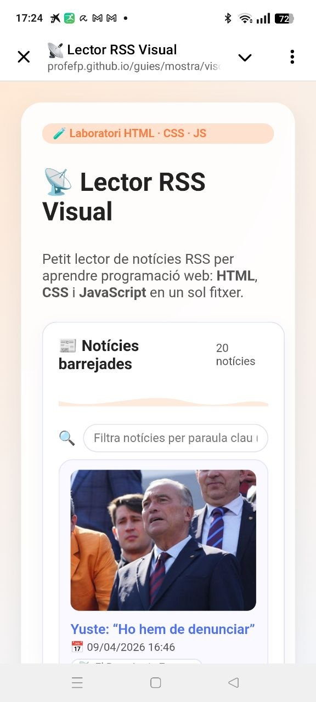

Conceptes previs abans de programar amb IA
Abans de demanar-li a la IA que fabriqui el producte, cal que els alumnes tinguin una base mínima sobre tres àrees: formats de dades, servidors i publicació i capacitats de les eines d'IA.
Formats de dades: XML, RSS i JSON
Les aplicacions web s'intercanvien informació amb formats estructurats. Els dos grans estàndards oberts:
- XML — eXtensible Markup Language. Estructura jeràrquica d'etiquetes, llegible per humans i màquines.
- RSS — Really Simple Syndication. Dialecte XML per publicar llistes de
notícies. Cada ítem té
<title>,<link>,<pubDate>… - JSON — JavaScript Object Notation. Més lleuger que XML, el format dominant avui per APIs REST.
Per a l'aula: mostra un fitxer RSS real al navegador i compara'l visualment amb un JSON equivalent. Mateixa idea, sintaxi diferent.
Servidors web i GitHub Pages
Un cop programada l'app cal allotjar-la en un servidor perquè sigui accessible des d'internet.
- GitHub Pages — gratis, URL pública
usuari.github.io/projecte. El fitxerindex.htmla la brancamaines publica automàticament. - Netlify / Vercel — alternatives modernes amb desplegament continu.
- Fitxer local — per a proves ràpides al navegador, suficient per a moltes activitats.
Concepte clau: el repositori de GitHub guarda i versiona el codi. GitHub Pages és el servei que el publica com a web pública.
Capacitats de les IA per a codi
No totes les plataformes d'IA ofereixen el mateix per a programació. Avalua:
- Qualitat i correctesa del codi generat
- Longitud màxima de sortida (tokens)
- Previsualització del resultat (Canvas / Artifacts)
- Opció de descarregar o exportar el fitxer
- Integració amb repositoris (GitHub, Drive…)
- Memòria de context dins la conversa
Aquests tres blocs es poden treballar en una sessió de 50 min abans de la pràctica. El RSS és un exemple ideal: és visible al navegador, té estructura clara i l'alumnat pot relacionar-lo amb notícies que ja llegeix.
Comparativa de plataformes IA per a programació
A l'hora de triar l'eina per a l'aula, cal avaluar factors que van més enllà de "qui fa millor codi".
| Plataforma | Qualitat codi | Previsualitza (Canvas) | Descàrrega fitxer | Envia a GitHub | Memòria conversa | Gratuït |
|---|---|---|---|---|---|---|
| 🤖 Copilot | Bona | No | No | No | Limitada | Sí |
| 💬 ChatGPT | Molt bona | Sí (Canvas) | Parcial | No | Bona | Limitada |
| 🔷 Claude | Excel·lent | Sí (Artifacts) | Sí | Via codi | Excel·lent | Limitada |
| ✨ Gemini | Bona | Parcial | Sí (Drive) | No | Bona | Sí |
- Sense previsualització: cal copiar el codi, guardar-lo i obrir-lo al navegador manualment.
- Sense descàrrega directa: cal copiar el codi amb el botó de copiar o seleccionant-lo tot.
- Sense Artifacts ni Skills: no pot enviar el fitxer a GitHub ni a cap servidor directament.
- Tokens limitats: per a apps llargues pot tallar la resposta. Cal demanar-li que "continuï".
- Memòria curta: en converses llargues pot "oblidar" decisions anteriors. Convé resumir l'estat.
- ⭐ Punt pedagògic positiu: copiar el codi a mà obliga l'alumne a llegir-lo i entendre'n l'estructura.
ChatGPT va liderar la generació de codi durant anys, però avui ha estat superat per eines com Claude (Anthropic) en benchmarks independents de programació. La recomanació és experimentar amb almenys 2 o 3 plataformes per al mateix prompt i comparar els resultats: és en si mateix una excel·lent activitat de pensament crític.
El procés: de la idea al producte publicat
Cinc passos des del disseny del prompt fins al desplegament a GitHub Pages.
🧠 Disseny del prompt (l'etapa més important)
Definim clarament el ROL, la TASCA, el CONTEXT i el FORMAT. Com més precís és el prompt, menys iteracions calen. Veieu el prompt complet al Bloc 4.
💬 Conversa interactiva amb Copilot
S'inicia la conversa a Copilot. 🤖 Veure conversa real → La IA genera el codi HTML complet en un sol bloc.
📋 Copiar el codi i guardar com a fitxer
Copiem el codi amb el botó de copiar (⚠️ Copilot no permet descarregar directament).
Enganxem al Bloc de Notes o VS Code i guardem
com a visor_RSS.html. Obrim al navegador per comprovar.
🐙 Publicar a GitHub Pages
Creem un repositori a GitHub, pugem el fitxer i activem GitHub Pages des d'Settings → Pages. En pocs minuts l'app és pública.
✅ Resultat final
L'app publicada és accessible a: 🌐 Veure l'app en viu →
El prompt: estructura i sintaxi
Un bon prompt per a programació segueix quatre elements: ROL · TASCA · CONTEXT · FORMAT.
ROL: Ets un programador web expert en dissenys moderns i responsive. TASCA: Crear una petita aplicació web en un sol fitxer HTML que serveixi per llegir notícies RSS. L'app ha de guardar 3 canals RSS de notícies i barrejar les notícies en una sola llista. Ha d'utilitzar emojis com a icones i algun gràfic SVG senzill per fer-la visual. CONTEXT: L'app ha de servir per aprendre programació en HTML/CSS/Javascript. Ha de ser molt visual, amb colors vius i emojis. Ha d'incloure l'opció d'afegir nous RSS i guardar-los. Ha d'estar explicada amb comentaris perquè sigui fàcil d'entendre. FORMAT: Crea un únic fitxer index.html amb HTML + CSS + JavaScript. Estil modern i fàcil de llegir. CANALS RSS inicials: • https://www.ara.cat/rss/latest/ • https://catalunyadiari.com/rss/last-posts • https://www.elpuntavui.cat/esports.feed?type=rss DEMANAR: Demana les preguntes que t'ajudin a crear una millor app.
- ROL clar: "programador web expert" orienta la IA cap a una resposta tècnica de qualitat.
- Restricció de format: "un sol fitxer HTML" evita múltiples fitxers que l'alumne hauria de combinar.
- Context pedagògic: "per aprendre programació" fa que la IA inclogui comentaris explicatius.
- "Demanar": convidar la IA a fer preguntes millora el resultat final perquè obliga a aclarir ambigüitats.
- URLs concretes: donar les URLs reals evita que la IA n'inventi de fictícies.
Resultat visual: mòbil i escriptori
L'app generada és completament responsive. 🌐 Veure en viu a GitHub Pages


Demaneu als alumnes: Quins elements canvien entre la versió mòbil i la d'escriptori?
Com ho aconsegueix el CSS? Pista: cerqueu la regla @media al codi.
El codi complet de l'app
El fitxer visor_RSS.html generat amb ajuda de la IA.
Podeu copiar-lo, guardar-lo i obrir-lo directament al navegador.
<!DOCTYPE html>
<!-- ╔══════════════════════════════════════════════════╗
║ VISOR RSS CATALÀ · Una pàgina, totes les ║
║ notícies · Creat amb Copilot (IA generativa) ║
╚══════════════════════════════════════════════════╝ -->
<html lang="ca">
<head>
<!-- UTF-8 permet accents i ç. viewport per a mòbil. -->
<meta charset="UTF-8">
<meta name="viewport" content="width=device-width, initial-scale=1.0">
<title>📰 Visor de Notícies RSS</title>
<style>
/* Variables CSS: canviant aquí canvies tota l'app */
:root {
--fons: #0f172a;
--targeta: #1e293b;
--accent: #38bdf8;
--text: #e2e8f0;
--muted: #94a3b8;
--radius: 12px;
}
*, *::before, *::after { box-sizing: border-box; margin: 0; padding: 0; }
body {
background: var(--fons); color: var(--text);
font-family: system-ui, sans-serif; padding: 20px;
}
/* ── CAPÇALERA ── */
header { text-align: center; padding: 40px 20px 30px; }
h1 {
font-size: clamp(1.6rem, 4vw, 2.4rem);
background: linear-gradient(90deg, #38bdf8, #818cf8);
-webkit-background-clip: text;
-webkit-text-fill-color: transparent;
}
/* ── CONTROLS ── */
.controls {
display: flex; flex-wrap: wrap; gap: 10px;
justify-content: center; margin: 20px 0;
}
button { padding: 10px 18px; border-radius: 8px; border: none; cursor: pointer; }
.btn-primari { background: var(--accent); color: #0f172a; font-weight: 700; }
.btn-secundari { background: #334155; color: var(--text); }
/* ── FORMULARI AFEGIR RSS ── */
#formulari-rss {
display: none; /* visible/ocult amb JS */
background: var(--targeta); border: 1px solid #334155;
border-radius: var(--radius); padding: 20px;
margin: 0 auto 20px; max-width: 600px;
}
#formulari-rss input {
width: 100%; padding: 10px 14px; margin: 8px 0 12px;
background: #0f172a; border: 1px solid #334155;
border-radius: 8px; color: var(--text); font-size: 14px;
}
/* ── XIPS DE CANALS ── */
#llista-canals {
display: flex; flex-wrap: wrap; gap: 8px;
justify-content: center; margin-bottom: 24px;
}
.canal-chip {
display: flex; align-items: center; gap: 6px;
background: #1e293b; border: 1px solid #334155;
border-radius: 999px; padding: 5px 12px; font-size: 12px;
color: var(--muted);
}
/* ── GRAELLA DE NOTÍCIES ──
CSS Grid: 1 columna en mòbil, 3 en escriptori */
#noticies {
display: grid;
grid-template-columns: repeat(auto-fill, minmax(300px, 1fr));
gap: 16px; max-width: 1200px; margin: 0 auto;
}
.noticia {
background: var(--targeta); border-radius: var(--radius);
padding: 18px; border: 1px solid #334155;
transition: border-color .2s, transform .2s; cursor: pointer;
}
.noticia:hover { border-color: var(--accent); transform: translateY(-2px); }
.noticia-font { font-size: 11px; color: var(--accent); font-weight: 600; margin-bottom: 8px; }
.noticia-titol { font-size: 15px; font-weight: 700; line-height: 1.4; }
.noticia a { color: inherit; text-decoration: none; }
.noticia a:hover { color: var(--accent); }
.noticia-data { font-size: 11px; color: var(--muted); margin-top: 10px; }
/* ── SPINNER DE CÀRREGA ── */
#estat { text-align: center; color: var(--muted); padding: 40px; }
.spinner {
display: inline-block; width: 24px; height: 24px;
border: 3px solid #334155; border-top-color: var(--accent);
border-radius: 50%; animation: girar .8s linear infinite;
vertical-align: middle; margin-right: 8px;
}
@keyframes girar { to { transform: rotate(360deg); } }
/* ── RESPONSIVE ── */
@media (max-width: 600px) {
.controls { flex-direction: column; align-items: stretch; }
}
</style>
</head>
<body>
<!-- SVG decoratiu: antena de ràdio -->
<header>
<svg width="60" height="60" viewBox="0 0 60 60" fill="none" style="margin-bottom:16px">
<circle cx="30" cy="30" r="28" fill="#1e293b" stroke="#38bdf8" stroke-width="2"/>
<path d="M20 38 Q30 18 40 38" stroke="#38bdf8" stroke-width="2" fill="none" stroke-linecap="round"/>
<path d="M15 43 Q30 10 45 43" stroke="#818cf8" stroke-width="1.5" fill="none" stroke-linecap="round" opacity=".6"/>
<line x1="30" y1="38" x2="30" y2="48" stroke="#38bdf8" stroke-width="2.5" stroke-linecap="round"/>
<circle cx="30" cy="38" r="3" fill="#38bdf8"/>
</svg>
<h1>📰 Visor de Notícies RSS</h1>
<p style="color:#94a3b8; font-size:14px;">Notícies en català · en temps real</p>
</header>
<!-- Controls principals -->
<div class="controls">
<button class="btn-primari" onclick="carregarTot()">🔄 Actualitzar</button>
<button class="btn-secundari" onclick="toggleFormulari()">➕ Afegir canal RSS</button>
<button class="btn-secundari" onclick="restablirCanals()">🔁 Restablir originals</button>
</div>
<!-- Formulari per afegir nous canals RSS -->
<div id="formulari-rss">
<label>🔗 URL del canal RSS:</label>
<input type="url" id="url-rss" placeholder="https://exemple.cat/rss">
<button class="btn-primari" onclick="afegirCanal()">✅ Afegir</button>
</div>
<div id="llista-canals"></div>
<div id="estat"><span class="spinner"></span> Carregant notícies…</div>
<div id="noticies"></div>
<script>
// ── CANALS PER DEFECTE ─────────────────────────────────
const CANALS_DEFAULT = [
{ nom:"Ara.cat", emoji:"🗞️", url:"https://www.ara.cat/rss/latest/" },
{ nom:"Catalunya Diari", emoji:"📋", url:"https://catalunyadiari.com/rss/last-posts" },
{ nom:"El Punt Avui", emoji:"⚽", url:"https://www.elpuntavui.cat/esports.feed?type=rss" }
];
// API gratuïta que converteix RSS (XML) en JSON
// Necessitem intermediari per la política CORS dels navegadors
const API = "https://api.rss2json.com/v1/api.json?rss_url=";
// ── PERSISTÈNCIA (localStorage) ───────────────────────
// localStorage guarda dades al navegador entre sessions
function obtenirCanals() {
const g = localStorage.getItem("rss_canals");
return g ? JSON.parse(g) : [...CANALS_DEFAULT];
}
function guardarCanals(c) {
localStorage.setItem("rss_canals", JSON.stringify(c));
}
function restablirCanals() { guardarCanals([...CANALS_DEFAULT]); carregarTot(); }
// ── INTERFÍCIE ─────────────────────────────────────────
function toggleFormulari() {
const f = document.getElementById("formulari-rss");
f.style.display = f.style.display === "block" ? "none" : "block";
}
function afegirCanal() {
const url = document.getElementById("url-rss").value.trim();
if (!url.startsWith("http")) { alert("❌ URL incorrecta"); return; }
const canals = obtenirCanals();
if (canals.some(c => c.url === url)) { alert("⚠️ Canal ja existent"); return; }
canals.push({ nom:"Nou canal", emoji:"📡", url });
guardarCanals(canals);
document.getElementById("url-rss").value = "";
toggleFormulari(); carregarTot();
}
function mostrarXips(canals) {
document.getElementById("llista-canals").innerHTML = canals.map((c,i) =>
`<div class="canal-chip">${c.emoji} ${c.nom}
<button onclick="eliminarCanal(${i})" style="background:none;border:none;
color:#ef4444;cursor:pointer;padding:0 2px;">✕</button>
</div>`
).join("");
}
function eliminarCanal(i) {
const c = obtenirCanals(); c.splice(i, 1); guardarCanals(c); carregarTot();
}
// ── CÀRREGA ASÍNCRONA (async/await) ───────────────────
// async/await permet fer peticions sense bloquejar la pàgina
async function carregarCanal(canal) {
try {
const r = await fetch(API + encodeURIComponent(canal.url));
const d = await r.json();
if (d.status !== "ok") return [];
return d.items.map(i => ({ ...i, _canal: canal.nom, _emoji: canal.emoji }));
} catch(e) { return []; }
}
async function carregarTot() {
const canals = obtenirCanals();
mostrarXips(canals);
document.getElementById("estat").style.display = "block";
document.getElementById("noticies").innerHTML = "";
// Promise.all llança TOTES les peticions en paral·lel
const resultats = await Promise.all(canals.map(carregarCanal));
let totes = resultats.flat();
totes.sort((a,b) => new Date(b.pubDate) - new Date(a.pubDate));
document.getElementById("estat").style.display = "none";
document.getElementById("noticies").innerHTML = totes.length === 0
? "<p style='color:#94a3b8;text-align:center;padding:40px'>😕 No s'han carregat notícies</p>"
: totes.map(n => {
const data = n.pubDate
? new Date(n.pubDate).toLocaleString("ca-ES",
{day:"numeric",month:"short",hour:"2-digit",minute:"2-digit"})
: "";
return `<article class="noticia" onclick="window.open('${n.link}','_blank')">
<div class="noticia-font">${n._emoji} ${n._canal}</div>
<div class="noticia-titol">
<a href="${n.link}" target="_blank">${n.title}</a>
</div>
${data ? `<div class="noticia-data">🕐 ${data}</div>` : ""}
</article>`;
}).join("");
}
// Quan la pàgina carrega, iniciem la càrrega de notícies
document.addEventListener("DOMContentLoaded", carregarTot);
</script>
</body>
</html>
Activitats per a l'alumnat
Activitat 1: Canvia els colors
Busca la secció :root { } al CSS. Canvia --accent per un altre
hexadecimal (p. ex. #ff6b35). Observa com canvia tot el disseny d'un sol cop.
Activitat 2: Afegeix un canal
Obre l'app i usa ➕ Afegir canal RSS. Prova:
https://www.ccma.cat/rss/. Les notícies noves apareixeran barrejades amb les
altres.
Activitat 3: Inspecciona el RSS
Obre https://www.ara.cat/rss/latest/ al navegador. Veuràs l'XML en cru. Identifica
<item>, <title> i <pubDate>.
Activitat 4: Millora amb IA
Demana a Copilot, Claude o ChatGPT que afegeixi cerca de notícies o filtre per canal. Compara el resultat entre plataformes.